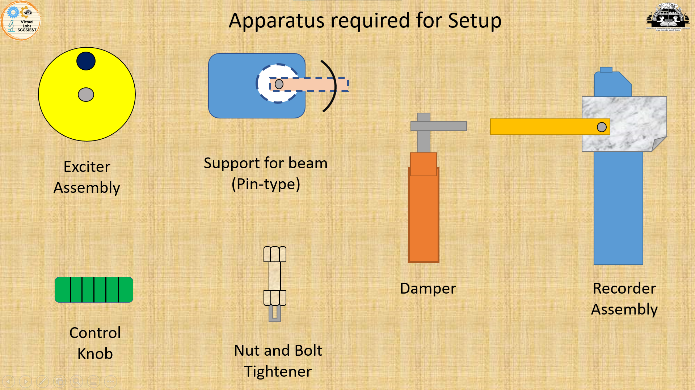
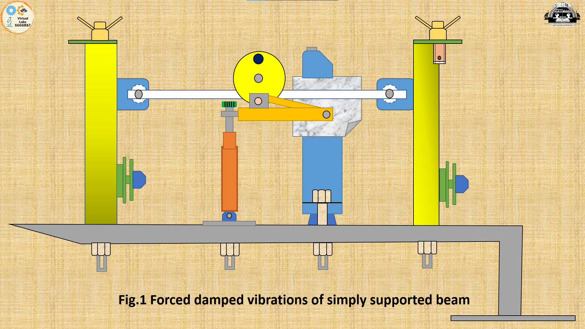

To study the forced lateral vibrations of the beam for different damping.
Apparatus :
Shaft
Stopwatch
Description of Set up :
The general set up of experiment is as shown in Fig. 1, slightly heavy rectangular
section bar then used for experiment is supported at both end in trunion fittings. Exciter unit
with the weight platform can be clamped at any convenient position along the beam. Exciter
unit is connected to the damper, which provides the necessary damping. Speed of strip-chart
recorder is 33 mm/sec.


Experiment Procedure :
Arrange the set up as shown in fig.1.
Connect the exciter to D. C. Motor through flexible shaft.
Start the motor and allow the system to vibrate
Wait for 3-4 min. for amplitude to build up for particular forcing frequency.
Adjust the position of strip-chart recorder. Take the record of amplitude v/s time on strip chart recorder by starting recorder motor.
Take record by changing forcing frequency.
Repeat the experiment for different damping.
Plot graph of amplitude v/s frequency for each damping.